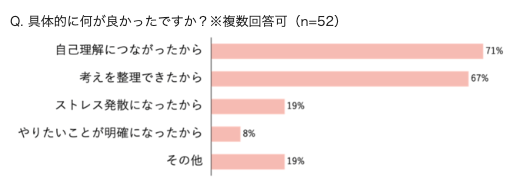

Includes
UI, UX design

自分で書いた内容を生成AIが
ポジティブにしてくれる日記アプリ
日記をつければ、自分を見つめ直すことができる。
それはいいことばかりではない。悲しい出来事を振り返れば悲しみが再び襲ってくることもある。
JoyDayはあなたが書いた思い出をポジティブに書き換えてくれるアプリ。思い出をJoyDayに変えていこう。

ターゲット
日記についネガティブなことばかり書いてしまう人

一般的には、日記を書くことはメンタルヘルスに良いとされている。
一方で、ネガティブな内容を書くうちにメンタルヘルスの悪化を助長してしまう可能性もある。
そこで、日記を書いていて気分が明るくなるようなUXを実現する仮想の日記アプリを考えた。
UX課題
既存のジャーナリングアプリは客観的な分析フィードバックを重視
自己分析はできてもストレス軽減にはつながりにくい可能性

自己分析はできてもストレス軽減にはつながりにくい可能性
「muute」を使用したコクヨ株式会社の社員52名へのアンケート結果

AIジャーナリングアプリ「muute」
UI, UX提案
ネガティブな感情をポジティブに置き換えるリフレーミングという心理療法に着目。
日記を書いた後に生成AIがポジティブに書き換えてくれるインタラクションにより、客観的な感情分析以上のメンタルヘルス効果が期待できる。
日記を書いた後に生成AIがポジティブに書き換えてくれるインタラクションにより、客観的な感情分析以上のメンタルヘルス効果が期待できる。

JoyDayボタンを押すことで日記の内容がポジティブに書き換わる


感情を顔文字と色で表現。日記と共に記された感情が一目で分かる設計。
日記を書くときに顔文字を選ぶのはもちろん、書き換えられてポジティブになった文章を受け入れられたら顔文字を変更できる。
カレンダー上でポジティブ度合いが一目で分かり、ネガティブな日記を選んでポジティブに変えることができる。
日記を書くときに顔文字を選ぶのはもちろん、書き換えられてポジティブになった文章を受け入れられたら顔文字を変更できる。
カレンダー上でポジティブ度合いが一目で分かり、ネガティブな日記を選んでポジティブに変えることができる。
ネガティブをポジティブに変換させるという意味で左から右へグラデーションを変えるロゴに。
joydayのyの最後も右上がりの矢印で表現。
joydayのyの最後も右上がりの矢印で表現。